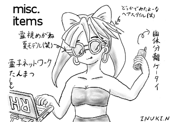
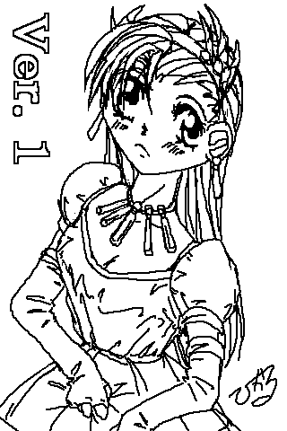
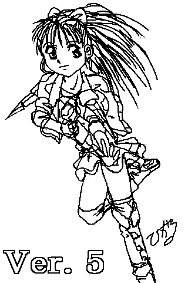
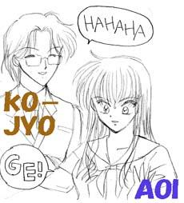
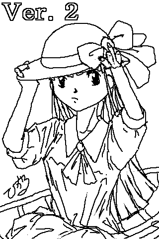

return
ＲＢ用語辞典

（猫野犬貴さん ／ さいりなパラレル）
− あ行 −

（ことぶきひかる さん）
【愛、奮える心】
あいふるえるこころ
・大正浪漫風シンデレラな舞台。
・RB1の主人公が主役を務める。
【アストラル社】
あすとらるしゃ
・あと８２年待てばＲＢ実用化してくれるぞ！
【ＲＨＳ】
あーる・えいち・えす
・表向きは、楠見さいりが経営する警備系の人材派遣会社として登録されているが、本当はさいりの趣味で運営されている正義の秘密結社。
心霊工学の世界的権威の楠見さいりを初め、トップクラスのＲＢデザイナーである笠原彩、天才的ハッカーにして凄腕のメカニック兼運転手の赤峰鈴、そして希代の戦略家である天野すみれ、莫大な霊子力を誇る森井桃太郎——と言った、各ジャンルの最高のスタッフが集う。
・ただ、その本社ビルの屋上には何故かさいりの姉のこよりの秘密基地があったりする（笑）
【赤峰 鈴】
あかみね すず
・運転手兼整備士で情報収集担当。 凄腕のハッカー。メカには無茶苦茶強い。 趣味はジャンクな物収集。 年齢は１９才。
【天野 すみれ】
あまの すみれ
・雑誌社所属のライター（5.00a参照）
・ＲＨＳの戦略担当（5.01参照）
・桃太郎の大学の先輩。
・5.01では彼女もカクテルポニーテールをしている。 元レディースで、今も彼女が一言掛ければ数千人の子分が集う。
【１．４４ＭＢ】
いってんよんよんめがばいと
・桃太郎の魂の情報（笑）
・彼の存在の全てがそこに納まる。
【お客様！ 緊急事態が発生しました!!】
おきゃくさま…
・ＲＢ世界におけるお約束（その１）
【オケアノス】
おけあのす
・メイドさんが国家警察の巡査長だったりする侮れない国家。（笑）
・人口で考えるとエストニアとかスロベニアあたりと同じくらいの規模の国家らしい。
【おしるこ】
おしるこ
・ＲＢ２及びリミックスに出演。ＲＢの隠れた主役（笑）
・何故か、２bitが冬場に自販機で見つけるとついつい一度は買ってしまう飲み物らしい……
・某湖畔の自販機では夏でも販売中！
− か行 −

（ことぶきひかる さん）
【カクテルポニーテール】
かくてるぽにーてーる
・さいりが己の技術の粋を用いて創った正義の味方。 外見は彩がデザインしている。 翼を生やした飛翔タイプに足が鱗に覆われた尻尾になっている水中タイプ——等、各種事件に対応できるように色々なタイプが存在する美少女型ヒロイン。
・彩の趣味が暴走すると、肉球を持つネコ耳少女や、身長十センチにもみたないＳＤボディまで存在する。
・なお、名前の由来は、星里もちるの漫画『カクテルぽにーてーる』です（笑）
【笠原 彩】
かさはら あや
・世界でもトップクラスのＲＢデザイナーで、カクテルポニーテールの外見デザインを担当。
・可愛いものを作るのに全てを掛け、可愛いものを作らせてくれると言う約束で、さいりと契約。 年齢は２０才。
【火星人Ｂｏｄｙ】
かせいじんぼでぃ
・ＲＢＴＳでのオプション（笑）
・さぁ、キミも火星人になって火星の大地をうねうね歩こう！
【カメラ】
かめら
・２bitが高校時代写真部に所属していたため、作中にちょくちょく出てくる設定（自爆）
・ただ、２bit自身の腕は下手である。
【霧島ユウ】
きりしまゆう
・ユウの日本名。正式には「ユウ＝霧島＝オケアノス」。（2.01参照）
・そういやユウの父さんって日本人だったっけ。
【楠見 さいり】
くすみ さいり
・年齢は１７才だが、博士号を持つ霊子工学の世界的権威。 各種発明で特許を取得、そのお金でＲＨＳを運営。 霊子ネットワークの発案者。 霊子力値は限りなくゼロ。
・使われなかった裏設定で、さいりの霊子力がゼロなのは、強大すぎる霊子力を保有しており、その暴走を恐れた彼女の母親がそれを封じていると言うものがある。
【楠見 こより】
くすみ こより
・さいりの姉／２１才で澪の後輩にあたる。母親が決めた許嫁有り（ＲＨ４の古城秀之がそうである） 心霊工学の人工霊魂の分野においては彼女の右に出る者はいない。
・『ノルン』の名前で軍の研究所を渡り歩き、戦闘用ＲＢの基礎ジーンマップを制作。その中に、幾つかの秘密のコードを紛れ込ましているため、いかなる戦闘用ＲＢも彼女に逆らうことはできない。
・ＲＢ４のツインテールも彼女の制作である。
・また、霊子力値は桃太郎をも凌駕し、２bitのＲＢキャラ最高（でも、封印を解いたさいりには負ける） 霊魂のままでの物理干渉もでき、多重憑依もできる文字通り最凶。
・使われたなかった裏設定で、楠見一族は心霊工学の元となった古代のオーバーテクノロジーの管理者で、その暴走と発展を見張っているって話が（笑） そして、その組織のトップは楠見姉妹の母親がいる（ＲＢ２の藤代澪もその組織の一人）

カット /
リンリン
さん
【ケンタウロス】
けんたうろす
・ヨーロッパに本拠地を置く裏組織。
・暗殺からテロの代行、各種兵器の売買——金さえ積めば、原潜すらも売ってくれる。
【古城 秀之】
こじょう ひでゆき
・武器密売をする古城商会の会長にてこよりのフィアンセ。 年齢は２７才。
【木幡 ケイ】
こばた けい
・ＲＢ１のもう一人の主役的存在。 麗淑女子短期大学に通う女子大生で、演劇サークルに所属。 本来主人公が借りる予定のＲＢに入ってしまった人。
・この人の所属する演劇サークルは人材不足のためなにかとレンタルボディに頼りがち。いいのかそれで？（笑）
・後に、舞台女優としてデビュー。 白井まこととは旧知の間柄。
【これが……僕】
これがぼく
・RB界におけるお約束（２）。
・いや、RBに限らないけど。（笑）
【コンピューターウィルス】
こんぴゅーたーうぃるす
・おおざっぱに言って、僕らの味方だ！（それでいいのか?!）
− さ行 −
【主役】
しゅやく
・我が輩はＲＢ１の主役である。まだ名前は無い（自爆）
・元々ＲＢはゲーム用の設定として考えていたため、彼の名前は意図的に存在しません。
・ 性格性質設定でか弱い女性に—— 彼が元に戻れたかは誰も知らない。でも、木幡ケイが女性に戻っているところからして、戻っていると予想される。
【白井まこと】
しらい まこと
・２bitのミスで、リミックスであきらになってる人（自爆）
・フリーのカメラマンで、八雲所長の研究所でＲＢのモニター経験有り。
・ＲＢ５の桃太郎の恋人だが、男性型ＲＢを借りては美少女をナンパして浮気する（笑） 桃太郎と同じく、すみれの後輩に当たる。
【条例】
じょうれい
・未来の日本では十八歳未満RB禁止らしい。がーん！
・浪人してタバコを始める奴とRBを始める奴に別れたりして。
【神魔】
じんま
・こよりが妹の正義の味方の活動を邪魔して遊ぶために用意した、魔物型ＲＢ。 人工霊とこよりの多重憑依で動かす。
【双栖幽霊】
そうさいゆうれい
・ＲＢの原点に当たる長編小説。
【蒼龍】
そうりゅう
・古城商会所属の一部隊。主に水上戦を得意とする。
・他に朱雀、玄武、白虎——そして、古城秀之の近辺警護を担当する最強のメイド軍団麒麟がいる。
− た行 −
【チェリー＆プラム（ツインテール）】
ちぇりー あんど ぷらむ
・ヒューマンウェポンの試作体で魂までもが人工に作られている。 世界で五本の指にも入る凄腕の双子の殺し屋。 年齢は女子高生ぐらいで、古城の保護下にある。
・レズの気あり（笑）
− な行 −
− は行 −

（ことぶきひかる さん）
【バーコード】
ばーこーど
・ＲＢ体に記された、使用者及びＲＢの情報。 正規のレンタル屋で借りたＲＢにはプリントが義務づけられている。
・女性は太股の内側につけることが多いらしい。（RB1参照）
・チェックのときは大変なことに…。
【パフェ】
ぱふぇ
・おしるこに並ぶもう一つの主役（笑）
【美的感覚】
びてきかんかく
・楠見さいりに欠けているモノ。 その為、彼女が自らＲＢをデザインすると、未知の生命体になる。
【深沢 葉月】
ふかざわ はづき
・双海探偵事務所で働く女子大生。 年齢は２１才。
【藤代 雅史】
ふじしろ まさし
・正規シリーズでは唯一、女性にならなかった主人公だが、リミックスで一番不幸な目に（笑）
・ある意味、彼がＲＢの真の主役である。 2.1では、澪直伝の剣術使いだが2.01ではその片鱗が無い（笑）
【双海 葵】
ふたみ あおい
・元凄腕の傭兵で今はしがない探偵。 戦闘術及び生存術は他のキャラを越える。
・年齢は２６才だが、十代半ばのＲＢに魂を移しているため今は女子高生をしている。 偽造ながらも、女子高生『双海あおい』としての戸籍を持つ。 また、埠頭の倉庫にあった探偵事務所だが、『あおい』の間だけは喫茶水風鈴の隣のビルに引っ越している。
・彼の身体は、何故か楠見こよりが持っていたりする（笑） また、あおいのＲＢはこよりが作っているため、彼女のワードの一言で、リミッターが外される。
・Ver3でもさりげなくツインテールの「お姉さま攻撃」の犠牲に。 HR SIZE=5 WIDTH=5>
【ブレードランナー】
ぶれーどらんなー
・近未来を描いた映画で、ＲＢ執筆の際の世界観の参考した作品のはずだが、シリーズを重ねる内に普通の２０世紀の世界観になっている。
・ＲＢ利用者の見分け方に、『砂漠で亀を見つけた——』って質問をするって裏設定があるかどうかは定かではない。
【ポセイドン】
ぽせいどん
・カクテルポニーテールに遣わされるはずの三つの僕の一つの水中戦用巨大ロボット——サル。
・他には、変身能力をもった黒豹型のイヌと、参考デザインが鳩のトリがいる。
− ま行 −
【マスター】
・水風鈴の無口なマスター。
・マスターの喋りは風季にのみ解読可。特殊な高速言語が使われているとかいないとか。（いないって）
【水風鈴】
みずふうりん
・風季の父親が経営する喫茶店。
・時給は７２０円。これでは釣り合わないくらいハードな仕事内容らしい。（樹談）
【みりん】
みりん
・葵の同居猫。 したたかで小賢しいヤツ。
【桃のカンヅメ】
もものかんづめ
・ＲＨＳを舞台にしたショートショート。 Ｒ−ｂｏｘにて掲載中。
【森井 桃太郎】
もりい ももたろう
・就職活動中のフリーター（5.01参照）
・フリーのカメラマン（5.00a参照）
・霊子力値は測定不能クラス。 ＲＨＳ所属のＲＢを使った正義の味方『カクテルポニーテール』担当。
・恋人にＲＢ３に出ている白井あきらがいるが——連絡取れないのが現状。
− や行 −
【八雲 樹】
やくも いつき
・老若男女に種族は元より、アニメマンガのキャラまで使用したＲＢの種類は多数。 その魂は流動にして不変——どんなＲＢにも馴染める反面、どんなＲＢに入っても自分を見失わないと言う希有な魂の持ち主。
・シリーズ中、自らの意志で女性型ＲＢを使用していた唯一の存在。 また、他の主役と違い元の身体にも簡単に戻れる。
・女の子のRBに入って丸一日経っても、自分の裸を見ていなかったという、いまどき感心な若者である。
【ユウ＝オケアノス】
ゆう＝おけあのす
・元々はオケアノス国の王子様だが、王位継承権を持つ姉妹が殺されたため、女性に——
・唯一自らのＤＮＡパターンを使ったＲＢでいるため、長期のＲＢ使用においても霊子力値はほとんど消耗しない。 それでも、多少は消耗しているため、寿命は元の身体の時と比べると若干短い。
・また、そのＲＢは楠見さいりが作っているが——年を逆算するとさいりが十代前半で作ったことになるのは秘密である（笑）
− ら行 −
【リカちゃんハウス】
りかちゃんはうす
・ＳＤ版のカクテルポニーテールの秘密基地（笑）
・鈴の技術の粋を集めて改造されたそれは、核の直撃に耐える。
【霊形質】
れいけいしつ
・これが保てないと魂が人型を取れなくなり、魂が拡散してしまう。
【霊子ネットワーク】
れいしねっとわーく
・ＲＢの世界では、物質転送機及びデジタル保管が可能であるが『魂』を転送することは出来なかったが、それを可能にしたネットワーク。
・ＲＢ１〜５の世界では研究段階の域を出ない技術であり、唯一楠見さいりだけがそのシステムを可能としている。
・１００年後のＲＢＴＳでは一般的な技術であり、転送時間及び距離、転送容量は関係ないため、ネットワークさえあれば、宇宙の果てさえも魂を転送させられる。
【霊子力値】
れいしりょくち
・世に言う霊力——魂の力。
・コレが低いと、幽体離脱装置にかかると死にます（笑）